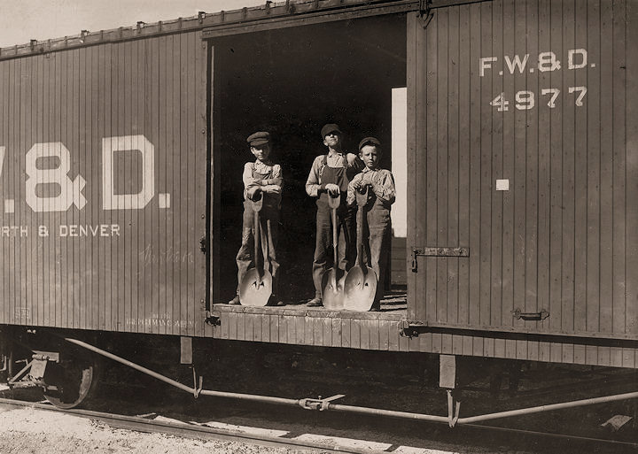
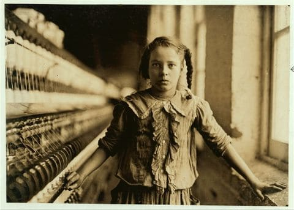

"Nothing like a good train story to let off some steam!"
by Steven Wu
At age 10 my father sent me to work on a train, hoping I could contribute to earning money for the family.It was hard for me emotionally to leave the family but it was the only way to make money, as little as it is. The first day on the job, I met the conductor and he gave me a tour of the train, it was a fun experience, he showed me the living quarters, the dining hall and many other places. I grabbed my suitcase full of clothes and set it on my bed in the living quarters, along with a few other kids. Then they put me to work, what i did most of the time was fit into small spaces then have a professional tell me what to do, whether it was fixing an engine or just picking something up that was hard for the adults to get. Other than that I was walking around maintaining the condition of the train and workplaces. I continued this job as I grew older, sending my money back to the family and only getting to see them on the holidays, and as I grew older, I saw my friends start leaving, due to injuries and just getting to big to be needed. That’s just what happened to me after a few more years, when I grew they no longer needed me so they shipped me back home. After I got home, I went back to work again but this time in an office, documenting the other stories like mine. Going around and photographing children working in these harsh conditions. When I hit my 60s i retired from the company, I had a lovely family and 2 great grandchildren. When They started working I was worried that they would face the same conditions as me however things has changed for the better, no more of the inhumane treatment. I realised that the world has turn into this wonderful world where children are no longer needed to work to support their families. However I was bitter, by working at such a young age it shaped me to be a better man and take nothing for granted. Kids these days just don’t understand how easy they have it.
"Childhood"
by Steven Wu
The situation at home hasn’t been too good, we have been suffering quite a bit in general. We have been trying to eat less and waste less water so we could afford other necessities. My husband and I have been working extra hours but still have trouble keeping the family together. Everything just costs way too much to afford. The only way to keep up is too send our children to go and work. For us this was the last resort, we tried to let them live normal lives and go to school and grow up to do something proper instead of working in these factories and putting them in harm's way. However we had no choice, the financial situation has been rough. So, we sent them off, we sent Adam to work in the farms, growing and harvesting when he hit 8 years old. We sent Ava to work in the factories to spin yarn when she was 10. Adam’s job was closer to home so he got to come home everyday and we watched as he got more injuries. He got tanned, calluses on his hands and feet but it was bearable, it didn’t seem to bother him as he was proud that he was providing for the family. However the factory Ava worked at was quite far so she could only come home on weekends. Each weekend she came home, she came back with more scars. She tells us these stories about the factory, what they did and how she got her scars, it was painful for us to hear the conditions. When Adam and Ava got 2 years older there were new legislations passed, things to regulate and restrict the labour of children. With a combination of these regulations and legislations child labour was finally brought to an end.Now they could no longer work anymore, but it was fine with us because our situation got a lot better and we couldn’t see our children get harmed anymore. So we sent them to school and they went on to live normal lives and worked in higher positions than anyone could have though.
